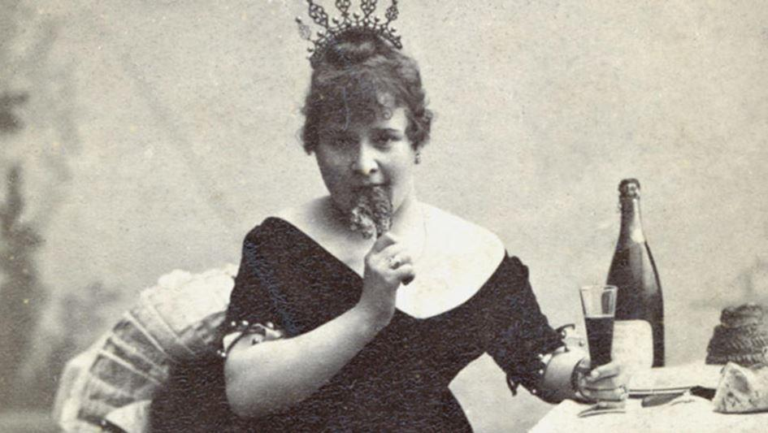

Le philosophe, économiste et historien écossais David Hume, considéré comme l’un des plus grands penseurs des Lumières, tenait la passion pour une forme d’existence primitive ou, si vous préférez, dit-il, « un mode primitif d’existence ». Voici deux exemples de destinées paroxysmiques.
Charles Bukowski
« Humanité, tu m’as toujours débecté, telle était ma devise », écrit-il dans Les Gens. Les Gens. Et les chiens. « Je suis totalement indifférent aux choses qui intéressent la plupart des gens », explique-t-il. Pêle-mêle, il cite le cinéma, la télévision, le sport en général et quelques-uns en particulier, le rock, l’histoire du monde, la fête nationale, Noël, Nouvel-An… Nous y voilà. Il s’en « tamponne », le Buk. « Comment un type qui ne s’intéresse à presque rien peut-il écrire sur quoi que ce soit ? Eh bien, j’y arrive. J’écris sur tout le reste, tout le temps […]. »
Il y eut cent ans en 2020, naissait Charles Bukowski (1920-1994). Cédric Meletta habite le personnage et sa prose pour retracer la vie déglinguée de ce « conteur de la folie ordinaire » dans Les Bukoliques, hommage à son héros (qui, attablé devant sa machine à écrire, illustre la couverture), à la poésie (en guise de clin d’oeil à Virgile) et à la vigne. « Les Frenchies ressemblent à des extra-terrestres, ils parlent souvent dans leur propre langue, ce qui m’évite de les trouver chiants. » Qui se sent morveux opine.
Nous sommes le vendredi 22 septembre 1978, avec Bernard Pivot, dans son émission culte Apostrophes qu’il faut être une chaîne française pour télédiffuser à une heure de forte audience.
« Et puis », se tenant à la gauche immédiate du maître de cérémonie « …Charles Bukowski, poète de l’underground. » Il est sur le point de prendre la vague, au figuré (son oeuvre littéraire) et au propre.
Le Buk est chargé. Il a vidé deux bouteilles de chablis de chez Raveneau, cuvée Le Clos 1977, nous précise-t-on, attention de la production. Non seulement chargé, mais lourd, il mate les jambes d’une autre invitée et émet des borborygmes. Il énerve Cavanna qui lui lance : « Ta gueule, Bukowski ! »
Le poète de l’underground s’apprête à y retourner. Il lève sa carcasse, cap à bâbord, tangue, Pivot, blanc comme un linge, s’écarte de peur que le bâtiment ne roule et ne s’effondre de son côté, lui jette un « ciao », plus un « à ne plus vous revoir » qu’un « bye bye ». L’irrévérencieux se fait une légende en France avant que de ne s’y faire un nom.
Laquelle, de la nature et de la culture, l’emporte sur l’autre ? Bukowski aime Nietzsche (qui accorde la primauté à la première), Artaud (un écrivain qui écrit ce qu’il a envie d’écrire), William Blake (« L’énergie est la seule vie. L’énergie c’est l’éternel délice. ») et tant d’autres que lui a fait absorber sa frénésie. Le démon n’est jamais loin. C’est, selon Rivarol, un ange qui a eu des malheurs.
Cédric Meletta raconte la rencontre de Bukowski avec Jane, « déesse en détresse », « complètement barge », « très chatte avec beaucoup de chien », puis sa propre rencontre (virtuelle) avec la pulpeuse Daniela, californienne dans l’âme, une femme qui pousse l’adulation jusqu’à en faire sa raison d’être, à en décorer son corps (dont la visite intégrale est tarifée) et à vivre avec un homme qui est le clone parfait de l’écrivain californien, ce dont elle s’assure en organisant un concours annuel du Bukowski le plus ressemblant. Bukowskin, quand vous l’avez dans la peau, c’est l’ivresse qui s’instille !
La Goulue
« Ma vertu ? Si tu passes par l’île Saint-Ouen, pour peu qu’elle ait été patiente, elle y est encore… ». Louise Weber est née en 1866. Elle a quatre ans quand la France déclare la guerre à la Prusse. C’est la débâcle. Les Allemands sont aux portes de Paris en quelques semaines et le siège durera plusieurs mois. Tous deux alsaciens, ses parents se sont rencontrés à Paris. Son père maudit sa chienne de vie, sa mère « usée par les privations » laisse s’éparpiller sa marmaille. Louise a déjà la danse au ventre.
« Ma fille a le diable dans la peau ! » Un journaliste de l’époque parle de charnelle vitalité, sincère, spontanée, débordante, sans pudeur ni contrainte ; un anonyme témoigne de ce que, à la faculté de l’argot, elle eût conquis l’agrégation d’emblée. A 16 ans, Louise est blanchisseuse, elle fait son entrée dans le monde, en quelque sorte. Elle a gagné la confiance de sa patronne qui l’envoie en course chez ses clientes. Louise visite leurs demeures cossues et leur emprunte leurs vêtements pour mettre ses charmes en scène et en faire le commerce, quand elle ne pose pas nue pour un peintre (Renoir, notamment) ou un photographe, tandis qu’elle vit dans une petite chambre meublée des Batignolles.
Louise doit son surnom, La Goulue, aux compagnons de bamboche de l’un de ses amants. Un dessin d’époque la montre couchée sur le dos face à une bande d’hommes débraillés pour lesquels elle avait dansé, leur lançant « Douze, je veux bien ; mais treize, ça porte malheur ! » A 18 ans, elle effectue ses débuts comme danseuse professionnelle pour noceurs fortunés à l’Élysée Montmartre.
En 1889, année de l’exposition universelle de Paris, sa renommée est devenue internationale. Ouvre, sur les ruines d’un vieux bastringue malfamé en faillite de la butte de Montmartre, le Moulin Rouge, dont le propriétaire proclame « Mon théâtre ne sera ni un café, ni un cabaret, ni un bordel, mais les trois à la fois ! » La Goulue en deviendra bien vite la Reine. Elle y côtoie d’éminentes personnalités, sans jamais se départir de sa gouaille, quitte à frôler l’incident diplomatique quand un soir elle lance au prince de Galles : « Ohé, Galles, tu paies le champagne ou c’est ta mère qui régale ? »
Maryline Martin s’interroge dans ses nouvelles et ses romans sur la place et le rôle des femmes dans l’Histoire. Dans La Goulue, elle ne se contente pas de retracer la trajectoire tragique de cette célèbre danseuse immortalisée par Toulouse-Lautrec, de la suivre dans sa seconde carrière de dompteuse de fauves, de vrais cette fois, et dans son inexorable disgrâce jusqu’à sa mort, le 29 janvier 1929 à 62 ans, elle ressuscite à partir du journal intime de Louise Weber et de ses recherches dans de multiples ouvrages et archives, dûment répertoriés, une époque aussi libre et fantasque que le fut l’héroïne de son récit.
T.G.
RÉFÉRENCES BIBLIOGRAPHIQUES
Les Bukoliques, Cédric Meletta, 248 pages, Prix de l’Ivresse 2020, Editions du Rocher.
La Goulue, Reine du Moulin Rouge, Maryline Martin, 216 pages, Editions du Rocher.
Partager cette page